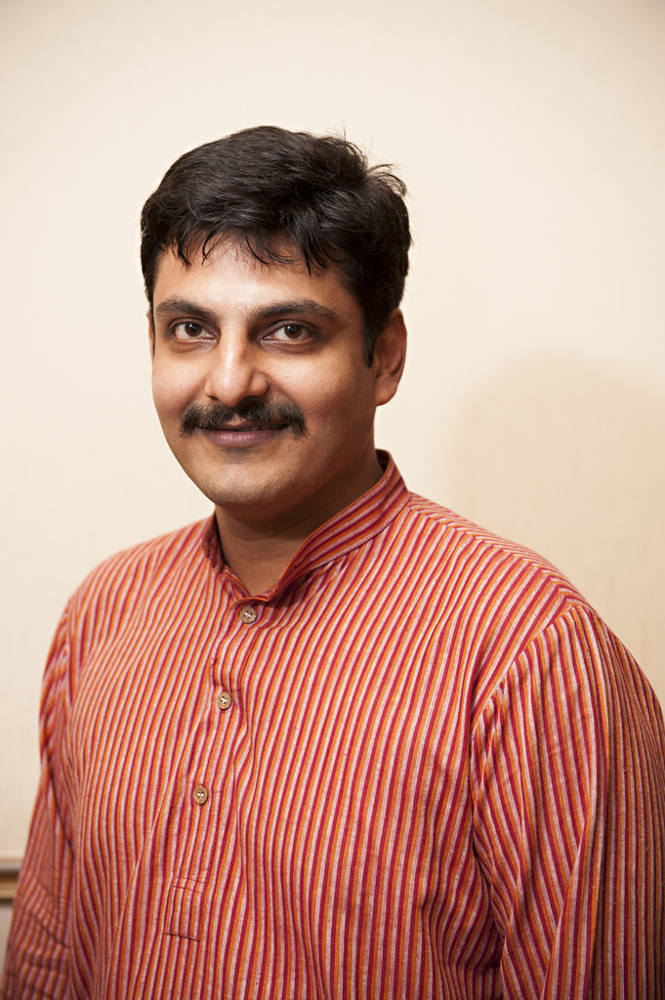
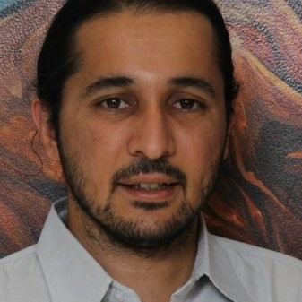
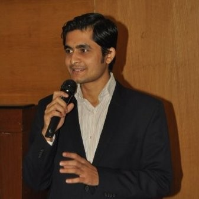
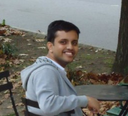
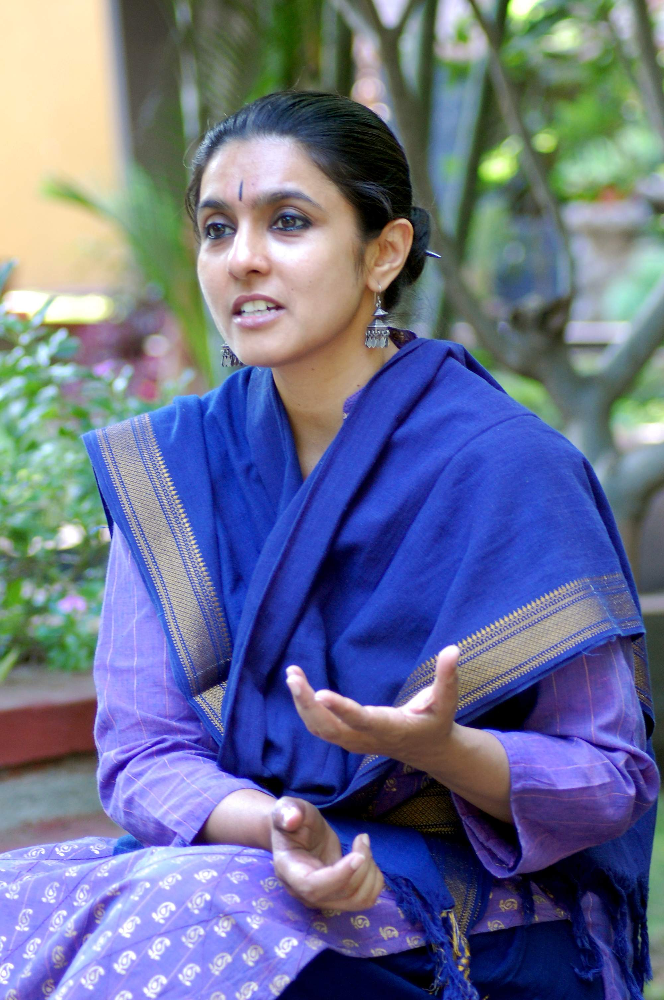
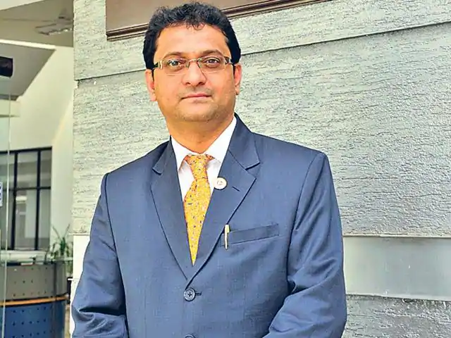
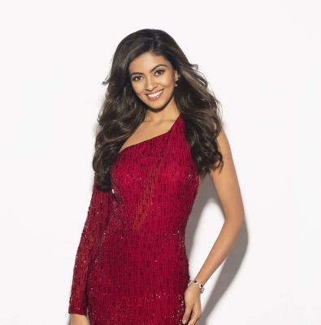

TTrailblazers
EEnlighten
DDreamers


Speakers | TEDxJNEC
Info
IPS Krishna Prakash

Info
Dr Nipun Vinayak

Info
Sameer Kelkar

Info
Aditya Kulkarni

Info
Ameya Bondre

Info
Parwati Dutta

Info
Dr. Jagannath Patil

Info
Shreya Rao Kamavarapu
Ideas worth sharing!